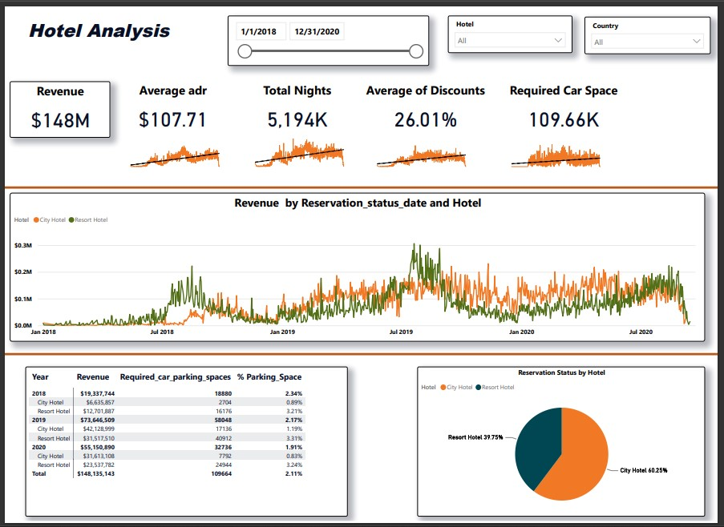
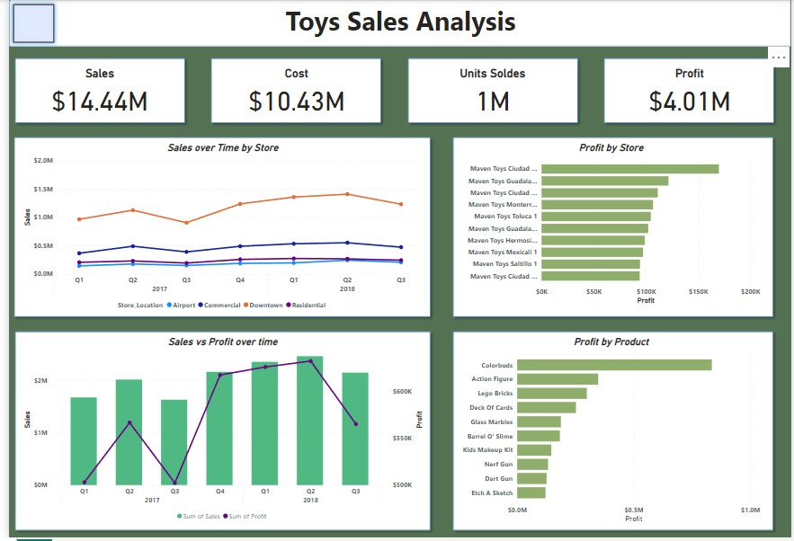
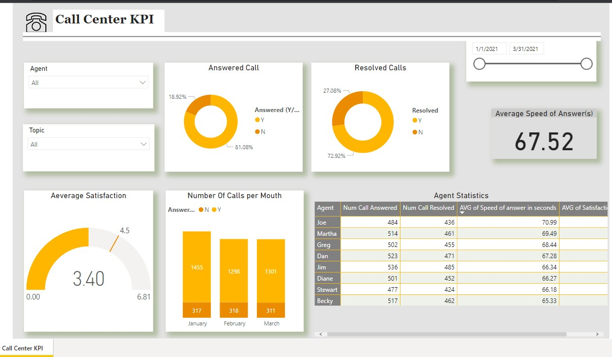
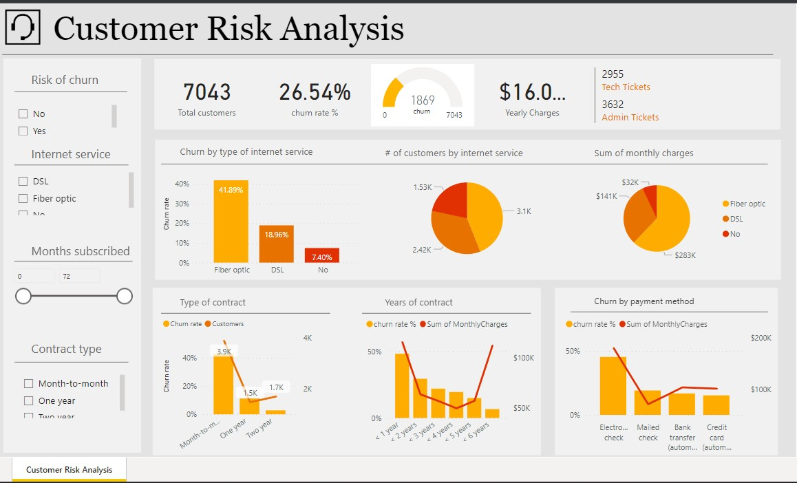
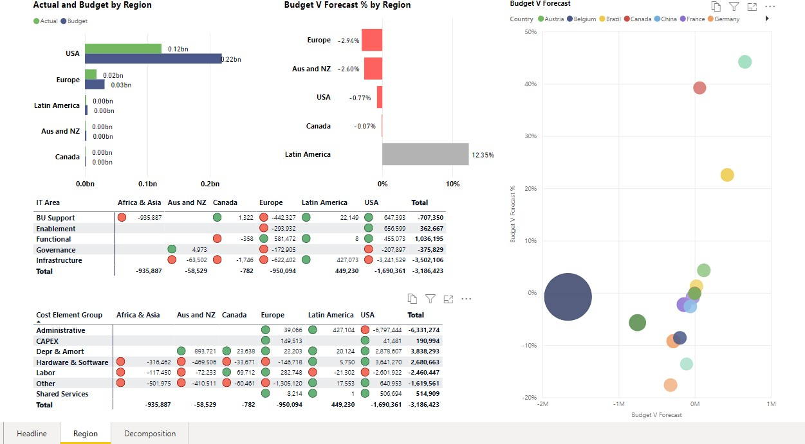
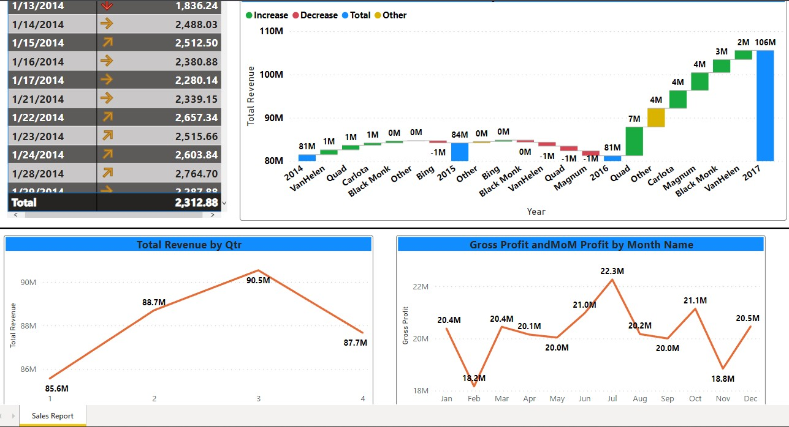
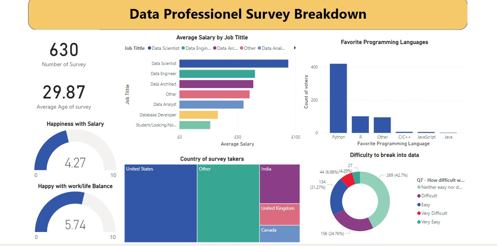

Data Exploration of Covid 19 Dataset.

In this project we performed a correlation analysis on a movie listings using Python and Jupyter. The purpose of this project was to do a deep analysis on what are the main contributing factors to gross income of a movie.

You can find out my visualization Projects with my Tableau public profile in here.
Hotel Summer Booking Report With SQL and Power BI

This data set from Kaggle contains booking information for a city hotel and a resort hotel and includes information such as when the booking was made, length of stay, the number of adults, children, and/or babies, and the number of available parking spaces, among other things.
I've Built a database; Develop the SQL Query; Connecting Power BI to the databse and Build a visual data story using Power BI.

Data on sales and inventory for Maven Toys, a fictitious chain of toy stores in Mexico, including information on products, stores, daily sales transactions, and current inventory levels at each location
the data was provided by Maven Analytics

This project is on a data set from Prosper, which is America’s first marketplace lending platform, with over $7 billion in funded loans. The main purpose of this project is to summarize the characteristics of variables that can affect the loan status and to get some ideas about the relationships among multiple variables using a summary statistics and data visualizations.The data provided from Kaggle.
The goal of this project is to investigate a dataset of appointments records for Brasil public hospitals. The data includes some attributes of patients and state if the patients showed up to appointments.The analysis should be focused on finding trends influencing patients to show or not show up to appointments. Using descriptive statistics the following question should be answered: What factors are important for us to know in order to predict if a patient will show up for their scheduled appointment?
For the capstone project, I have selected the Cyclistic bike share analysis case study to work on. For the case study, I will perform the real-world tasks of a junior data analyst for the marketing team at Cyclistic, a bike-share company in Chicago.
Initial analysis of datasets provided by Cyclistic using Microsoft Excel.
Data cleaning, manipulation and exploration using R programming.
Data Visualization using Tableau Public.

Power BI Virtual Case Experience using Power BI to clean wrangle and visualise data to help telecom company to understand their customers and their employees better : 1st assignement was to help retention manager to understand wich employee and wich client are thinking about leaving the company.

Power BI Virtual Case Experience using Power BI to clean wrangle and visualise data to help telecom company to understand their customers and their employees better : 2nd assignement report regarding customer retention for manager to know in advance wich customers who are at risk to leave.

I've worked with dataset of 12 mounth of worth of Budgets, Forcast Data and 6 mounth worth of Actual Data for the It Departement of Global Company.

